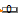
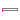

| Name | Description |
|---|---|
|  ShowValue | Show Integer value from numberPort or from number input field in diagram layer dynamically |
| Sum | Sum of Integers: y = k[1]*u[1] + k[2]*u[2] + ... + k[n]*u[n] |
| Product | Product of Integer: y = u[1]*u[2]* ... *u[n] |
|  MultiSwitch | Set Integer expression that is associated with the first active input signal |
| TriggeredAdd | Add input to previous value of output, if rising edge of trigger port |
| Name | Description |
|---|---|
| use_numberPort | = true, if numberPort enabled |
| number | Number to visualize if use_numberPort=false (time varying) |
| Name | Description |
|---|---|
| numberPort | Number to be shown in diagram layer if use_numberPort = true |
| number2 |
| Name | Description |
|---|---|
| k[nu] | Input gains |
| Name | Description |
|---|---|
| u[nu] | |
| y |
| Name | Description |
|---|---|
| u[nu] | |
| y |
The block has a vector of Boolean input signals u[nu] and a vector of (time varying) Integer expressions expr[:]. The output signal y is set to expr[i], if i is the first element in the input vector u that is true. If all input signals are false, y is set to parameter "y_default" or to pre(y) depending on the parameter use_pre_as_default:
// Conceptual equation (not valid Modelica) i = 'first element of u[:] that is true'; y = if i==0 then if use_pre_as_default then pre(y) else y_default else expr[i];
| Name | Description |
|---|---|
| expr[nu] | y = if u[i] then expr[i] elseif use_pre_as_default then pre(y) else y_default |
| y_default | Default value of output y if use_pre_as_default=false, as well as pre(y) at initial time |
| use_pre_as_default | = true, y holds its last value if all u[i]=false, otherwise y=y_default |
| Name | Description |
|---|---|
| u[nu] | Set y = expr[i], if u[i] = true |
| y | Output depending on expression |
| Name | Description |
|---|---|
| use_reset | =true, if reset port enabled |
| use_set | =true, if set port enabled and used as default value when reset |
| y_start | Initial and reset value of y if set port is not used |
| Name | Description |
|---|---|
| y | |
| u | |
| trigger | |
| reset | |
| set |